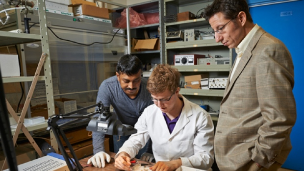

We investigate multifunctionality in reduced dimensions, and the applications of multifunctional nanoscale systems for addressing some of the most critical challenges of our time through the development of new energy-efficient and sustainable technologies.

See More
We investigate multifunctionality in reduced dimensions, and the applications of multifunctional nanoscale systems for addressing some of the most critical challenges of our time through the development of new energy-efficient and sustainable technologies.
See More
We investigate multifunctionality in reduced dimensions, and the applications of multifunctional nanoscale systems for addressing some of the most critical challenges of our time through the development of new energy-efficient and sustainable technologies.
News
Our paper on plasmon-exciton coupling in semiconductor nanocrystals published in Nature Nanotechnology.